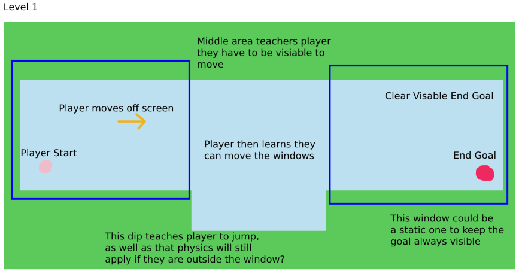
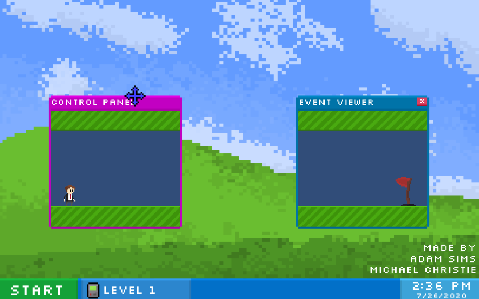
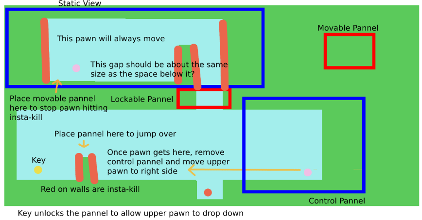

Out of CTRL
You boot up your Windows XP PC to play games before school and you encounter a message recommending a game. Little do you know you're about to have to help
characters survive an onslaught of popups, navigating them through the world with the help of your handy CONTROL PANEL.
For this game, I worked on only the level design side of things, understanding how the mechanics work of the game and trying to come up with ways to help
the player understand how these mechanics work, and by the end of the game challenge the player into using these simplistic mechanics together to form challenging
puzzles. Not all the levels that I designed made it into the final game due to us running low on time to put everything in before the deadline.
Begining Levels
The first few levels we're designed to help the player understand how the game mechanics work. If we take the first level for example, the player starts inside a 'Control Pannel', which, when a pawn is inside of this area, they can control those pawn. The player can also imediately see the end goal to the right. If the player decides to move out of the control pannel, they stop controlling the pawn, but physics can still apply outside of that view area, so as soon as the player gets out of the 'Control Pannel', they immediately drop into a pit. So just in this first level the player has understood that they need a 'Control Pannel' to move, and that physics applies outside of that 'Control Pannel'
Which then looks like and plays out like this in the game.

Level 2 then introduces an simple obsticle for the player to to jump over. When the player then gets to Level 3, their path is blocked and this object can be moved and deleted.
However deleting this obsticle has consequences, meaning the player cannot jump over the gap and get to the end goal, instead landing on a block that fails the level. Using the knowledge that
some blocks can be jumped on, the player learns to move the obsticle over the virus block, which fails the level, so that the player can jump onto the obsticle to cross the gap.
Challenge Levels
When we added a second pawn into the scene, there became more of a challenge of a. keeping both pawns alive, but b. from a level design perspective it was about how do we use both pawns
in the scene. One level that made in into the release was a level where you had to collect keys in a sequence to get to the end, however as soon as you dropped down from the first key there
was no way to get back up. So using two pawns in this level was about team work to collect the keys and get to the end goal.
Some of the scaling of this level changed to fit it inside the game window, however the core idea behind this level is still the same.
There were also some levels that we're added into the game. This was the first challenging level that I designed for the game. The idea behind this level was the pawn in the top left would always be moving, and you had to set up that pawn with enough space and control when you moved the lower right pawn to get the key. The player could also use the obsticle block to stop either pawn from walking into a wall, however to get the key to get the lower pawn down, that obsticle would be needed to help jump over the virus wall. The idea was simple, and when I shared it with my partner for this project, they took a while trying to figure it out and liked the idea behind it.
